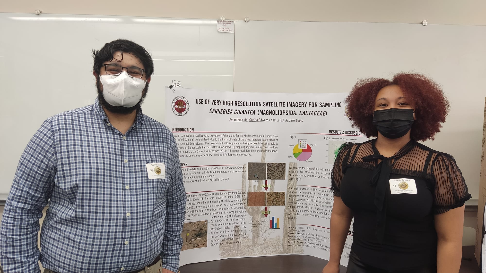

Xiao Feng's lab
Mainly looking at biogeography, biodiversity informatics, methods in ENM/SDM and ecoclimate teleconnection.

Currently, the team consists of Dr. Xin Chen, Dr. Tainá Rocha, Dr. Feng and myself. We are an international laboratory with diverse origins (China, Brazil and Spain), and several collaborators from South Korea, USA or Mexico.
Recent highlights!
Look at this! How deregulation, drought and increasing fire impact Amazonian biodiversity. Feng et al. (2021) published in Nature. The impacts of fire on the ranges of species in Amazonia could be as high as 64%, and greater impacts are typically associated with species that have restricted ranges.
Undergraduate Research Symposium 2022

On April 7th, Carina Edwards and Ayyan Hussain presented in the UROP symposium at Florida State University. They spoke about the use of very high resolution satellite imagery for sampling Saguaro. Great job guys!
Saguaro is a species of cactus native to southwest Arizona and Sonora, Mexico. Due to the harsh climate in the area, studies on these cacti have been limited. This research will help this effort by mapping saguaro using their shadows in satellite images